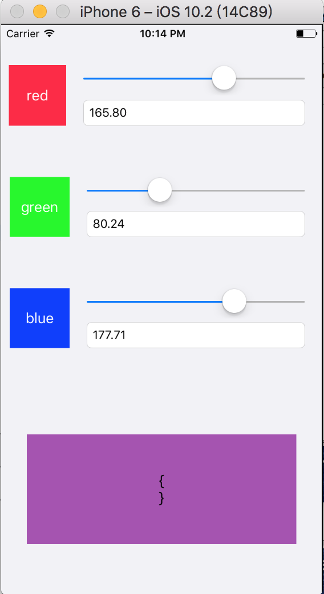

ReactiveCocoa 中的一对一的单向数据流 RACSignal 和一对多的单向数据流 RACMulticastConnection 。
现在我们来了解一下，一对一的双向数
据流 RACChannel 。
举个栗子：

上面图片每个UISlider改变对应的UITextField也跟着改变，反之UITextField改变对应的UISlider也跟着改变。这样两个空间就形成双向绑定。
上码:
//双向绑定 slider改变TF也改变 TF改变slider也跟着改变
-(RACSignal *) blindSlider:(UISlider *)slider textField:(UITextField *) textField{
//TF的第一次改变马上触发合并信号 让初始化时就触发合并信号
RACSignal *textSignal = [[textField rac_textSignal] take:1];
RACChannelTerminal *sliderSignal = [slider rac_newValueChannelWithNilValue:nil];
RACChannelTerminal *textFieldSignal = [textField rac_newTextChannel];
[textFieldSignal subscribe:sliderSignal];
[[sliderSignal map:^id(id value) {
return [NSString stringWithFormat:@"%.02f",[value floatValue]];;
}] subscribe:textFieldSignal];
//合并两个信号 其中一个信号有改变都会触发该合并信号
return [[[textFieldSignal merge:sliderSignal] merge:textFieldSignal] merge:textSignal];
}
- (void)viewDidLoad {
[super viewDidLoad];
RACSignal *redColorSignal = [self blindSlider:_redSlider textField:_redTF];
RACSignal *blueColorSignal = [self blindSlider:_blueSlider textField:_blueTF];
RACSignal *greenColorSignal = [self blindSlider:_greenSlider textField:_greenTF];
//combineLatest 要三个信号都激活才响应；
RAC(self.showColorView, backgroundColor) = [[RACSignal combineLatest:@[redColorSignal,blueColorSignal,greenColorSignal]] map:^id(RACTuple* value) {
return [UIColor colorWithRed:[value[0] floatValue]/255.0 green:[value[2] floatValue]/255.0 blue:[value[1] floatValue]/255.0 alpha:1];
}];
}
//rac做网络请求
-(RACSignal *) signalFromUrl:(NSString *) urlStr{
return [RACSignal createSignal:^RACDisposable *(id<RACSubscriber> subscriber) {
NSURLSessionConfiguration *configuration = [NSURLSessionConfiguration defaultSessionConfiguration];
NSURLSession *session = [NSURLSession sessionWithConfiguration:configuration];
NSURLSessionDataTask *data = [session dataTaskWithURL:[NSURL URLWithString:urlStr] completionHandler:^(NSData * _Nullable data, NSURLResponse * _Nullable response, NSError * _Nullable error) {
if (error) {
[subscriber sendError:error];
}else{
NSError *e;
NSDictionary *jsonDic = [NSJSONSerialization JSONObjectWithData:data options:kNilOptions error:&e];
if (e) {
[subscriber sendError:e];
}else{
[subscriber sendNext:jsonDic];
[subscriber sendCompleted];
}
}
}];
[data resume];
return [RACDisposable disposableWithBlock:^{
}];
}];
}
使用该RACSignal请求方法
[[self signalFromUrl:@"http://www.orzer.club/test.json"] subscribeNext:^(id x) {
NSLog(@"请求成功:%@",x);
} error:^(NSError *error) {
NSLog(@"请求失败:%@",error.domain);
} completed:^{
NSLog(@"请求完成");
}];
RACCommand类用于表示事件的执行，一般来说是在UI上的某些动作来触发这些事件，比如点击一个按钮。RACCommand的实例能够决定是否可以被执行，这个特性能反应在UI上，而且它能确保在其不可用时不会被执行。通常，当一个命令可以执行时，会将它的属性allowsConcurrentExecution设置为它的默认值：NO，从而确保在这个命令已经正在执行的时候，不会同时再执行新的操作。命令执行的返回值是一个RACSignal，因此我们能对该返回值进行next:，completed或error:，这在下文会有所展示。
RACCommand的属性
1. executionSignals:需要执行的block成功的时候返回的信号，他是在主线程执行的。
2. executing：判断当前的block是否在执行，执行完之后会返回@(NO).
3. enabled:当前命令是否enabled，默认是no，他也可以根据enableSignal来设置或者allowsConcurrentExecution设置为NO的时候（command已经开始执行）
4. errors:执行command的时候获取的error都会通过这个信号发送
5. allowsConcurrentExecution：是否允许并发执行command，默认是NO。
使用RACCommand将ViewModel的RACCommand与按钮的rac_command绑定
-(void)setViewModel:(LMLoginViewModel *)viewModel{
_viewModel = viewModel;
self.button.rac_command = self.viewModel.loginCommand;
//判断是否正在执行
[self.button.rac_command.executing subscribeNext:^(id x) {
if ([x boolValue]) {
NSLog(@"View: login..");
} else {
NSLog(@"View: end logining");
}
}];
//执行结果
[self.button.rac_command.executionSignals.flatten subscribeNext:^(id x) {
NSLog(@"View:result:%@",x);
}];
//错误处理
[self.button.rac_command.errors subscribeNext:^(id x) {
NSLog(@"error:%@",x);
}];
}
在ViewModel对按钮的点击事件做处理
-(void) setupSign{
//executionSignals是RACCommand的signal，每当command开始执行时next:，其参数是由command创建的signal，
//1.开始执行的信号
RACSignal *startedSignal = [self.loginCommand.executionSignals map:^id(RACSignal *subscribeSignal) {
return NSLocalizedString(@"VM: Sending request...", nil);
} ];
//2.执行完成的信号处理
//materialize会将一个signal转换为RACEvent信号（将一个signal的next:complete和error:消息转换为RACEvent实例的next:的值）。
RACSignal *completedSignal = [self.loginCommand.executionSignals flattenMap:^RACStream *(RACSignal *subscribeSigna) {
return [[[subscribeSigna materialize] filter:^BOOL(RACEvent *event) {
return event.eventType == RACEventTypeCompleted;
}] map:^id(id value) {
return NSLocalizedString(@"VM: Thanks", nil);
}];
}];
//3.executionSignals属性，这个signals不会发送了error事件，而是由errors这个属性来发送的
RACSignal*failedsignal = [[self.loginCommand.errors subscribeOn:[RACScheduler mainThreadScheduler]] map:^id(NSError *error) {
return NSLocalizedString(@"VM: Error :(", nil);
}];
self.passSignal = [RACSignal merge:@[completedSignal]];
//判断是否正在执行
[self.loginCommand.executing subscribeNext:^(id x) {
if ([x boolValue]) {
NSLog(@"VM: login..");
} else {
NSLog(@"VM: end logining");
}
}];
//执行结果
// [self.loginCommand.executionSignals.flatten subscribeNext:^(id x) {
// NSLog(@"VM:result:%@",x);
// }];
}
-(RACCommand *)loginCommand{
if (!_loginCommand) {
_loginCommand = [[RACCommand alloc] initWithSignalBlock:^RACSignal *(id input) {
return [RACSignal createSignal:^RACDisposable *(id<RACSubscriber> subscriber) {
[subscriber sendNext:@(1)];
[subscriber sendCompleted];
return nil;
}];
}];
}
return _loginCommand;
}
把self.requestCommand和网络请求绑定
self.requestCommand = [[RACCommand alloc] initWithSignalBlock:^RACSignal *(id input) {
RACSignal *signal = [RACSignal createSignal:^RACDisposable *(id<RACSubscriber> subscriber) {
NSString *url =[NSString stringWithFormat:@"%@/User/AccountManage?%@",API_GATEWAY,[KADDataTrack getTrackParamsWithType:nil]];
[[KADHttpManage sharedManage] getJsonAsyn:url andParams:nil andSucc:^(id data) {
@strongify(self)
NSInteger code = [[data objectForKey:@"Code"] integerValue];
if (code == 0) {//成功
// [self.dataArray removeAllObjects];
self.dataArray = [KADUserUnwrapModel objectArrayWithKeyValuesArray:[data objectForKey:@"Data"]];
[subscriber sendNext:@(YES)];
[subscriber sendCompleted];
}else if(code == 1){//请登录
NSString *msg = [data objectForKey:@"Message"];
NSError *err = [NSError errorWithDomain:NSCocoaErrorDomain code:code userInfo:@{NSLocalizedDescriptionKey:msg}];
[subscriber sendError:err];
}
} andFail:^(NSError *error) {
// KADError *err = [KADError initWithCode:error.code andMessage:error.localizedDescription];
[subscriber sendError:error];
}];
return nil;
}];
return signal;
}];
在ViewController中订阅该请求信号
-(void) getData{
RACSignal *signal = [self.viewModel.requestCommand execute:nil];
@weakify(self)
[signal subscribeNext:^(id x) {
@strongify(self)
[self.tableView reloadData];
}];
[signal subscribeError:^(NSError *error) {
@strongify(self)
[self alertShow:error.localizedDescription];
}];
}
autoriedSignal方法
//用rac定位 返回信号内容是有个布尔值：用户是否授权
-(RACSignal *) autoriedSignal{
//判断是否授权
if ([CLLocationManager authorizationStatus] == kCLAuthorizationStatusNotDetermined) {
//没有授权就提示用户授权
[self.manager requestWhenInUseAuthorization];
//创建用户授权结果的信号
return [[self rac_signalForSelector:@selector(locationManager:didChangeAuthorizationStatus:) fromProtocol:@protocol(CLLocationManagerDelegate)] map:^id(id value) {
return @([value[1] integerValue] == kCLAuthorizationStatusAuthorizedWhenInUse );
}];
}
return [RACSignal return:@([CLLocationManager authorizationStatus] == kCLAuthorizationStatusAuthorizedWhenInUse)];
}
setLocation授权判断和获取反地理编码
-(void)setLocation{
//autoriedSignal判断是否授权
[[[[self autoriedSignal] filter:^BOOL(id value) {
//过滤 如果授权就往下
return [value boolValue];
}] flattenMap:^RACStream *(id value) {
//授权过的 跟踪定位信息
return [[[[[[[self rac_signalForSelector:@selector(locationManager:didUpdateLocations:) fromProtocol:@protocol(CLLocationManagerDelegate)] map:^id(id value) {
//取代理方法的第二个值
return value[1];
}] merge:[[self rac_signalForSelector:@selector(locationManager:didFailWithError:) fromProtocol:@protocol(CLLocationManagerDelegate)] map:^id(id value) {
//定位失败返回错误信息
return [RACSignal error:value[1]];
}]] take:1] initially:^{
//信号开始前做什么
[self.manager startUpdatingLocation];
}] finally:^{
//信号结束后做什么
[self.manager stopUpdatingLocation];
}] flattenMap:^RACStream *(id value) {
CLLocation *location = [value firstObject];
return [RACSignal createSignal:^RACDisposable *(id<RACSubscriber> subscriber) {
//反编码获取地理信息
[self.coder reverseGeocodeLocation:location completionHandler:^(NSArray<CLPlacemark *> * _Nullable placemarks, NSError * _Nullable error) {
if (error) {
[subscriber sendError:error];
}else{
[subscriber sendNext:[placemarks firstObject]];
[subscriber sendCompleted];
}
}];
return [RACDisposable disposableWithBlock:^{
}];
}];
}];
}] subscribeNext:^(id x) {
self.placeLabel.text = [x addressDictionary][@"Name"];
} error:^(NSError *error) {
self.placeLabel.text = [NSString stringWithFormat:@"%@",error.userInfo];
}] ;
}
在viewDidLoad直接使用[self setLocation];
通知的坑：不释放通知，会导致每次进来会叠加 所以添加takeUntil方法 在VC释放时就不订阅该信号
@weakify(self)
[[[[[NSNotificationCenter defaultCenter] rac_addObserverForName:UIKeyboardWillShowNotification object:nil] map:^id(NSNotification *value) {
return value.userInfo;
}] takeUntil:self.rac_willDeallocSignal]subscribeNext:^(NSDictionary *userInfo) {
@strongify(self)
double time = [[userInfo valueForKey:UIKeyboardAnimationDurationUserInfoKey] doubleValue];
CGRect keyboardRect = [[userInfo valueForKey:UIKeyboardFrameEndUserInfoKey] CGRectValue];
[UIView animateWithDuration:time animations:^{
[self.importBar mas_updateConstraints:^(MASConstraintMaker *make) {
make.bottom.mas_equalTo(-keyboardRect.size.height);
}];
[self.view layoutIfNeeded];
}];
}];
有时我们希望满足一定条件时，自动触发某个方法，有了这个category就可以这么办
[self rac_liftSelector:@selector(doSomething) withSignals:signalA, signalB, nil];
//初始化这个队列时流初始化时，内容就已经处理好
RACSequence *seq = [sigal sequence];
//RACSequence 与 RACSignal 可以互相转换
RACSignal *signal = [seq signal];
map不会整平RACSequence,但使用flattenMap是对信号处理会整平RACSequence
RACSequence *sequence1 = [@[@(1),@(2)] rac_sequence];
RACSequence *sequence2 = [@[@(3),@(4)] rac_sequence];
RACSequence *sequence3 = [@[sequence1,sequence2] rac_sequence];
NSArray *array = [[sequence3 flattenMap:^RACStream *(RACSequence *value) {
return value;
}] array];
NSArray *mapArr = [[sequence3 map:^id(id value) {
return value;
}] array];
NSLog(@"flattenMap-> %@",array);
NSLog(@"map -> %@",mapArr);
输出
flattenMap-> (
1,
2,
3,
4
)
map -> (
"<RACArraySequence: 0x60800002fa60>{ name = , array = (\n 1,\n 2\n) }",
"<RACArraySequence: 0x60800002faa0>{ name = , array = (\n 3,\n 4\n) }"
)